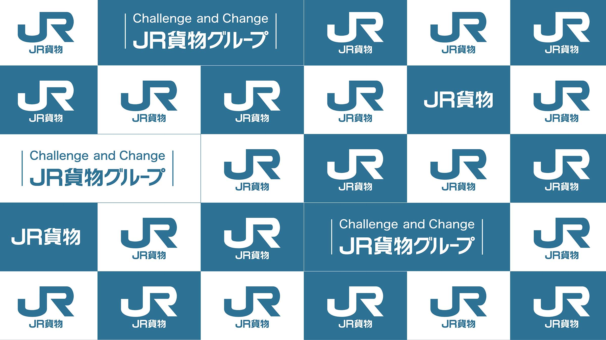

列車データを追加
貨物列車
普通列車
通過駅:
-選択-
吹上 (通過)
方面:
-選択-
上り
下り
通過時刻:
車両:
-選択-
EH500
EH200
EF210
EF65
EF64
EF81
DD51
その他
内容:
-選択-
コンテナ
石油
石油返空
砂利鉱石
砂利鉱石返空
その他
単機
追加
種別:
-選択-
普通
快速 (新宿)
特別快速
特急
回送
方面:
-選択-
上り
下り
通過時刻:
行先:
-選択-
高崎行き
前橋行き
籠原行き
熱海行き
平塚行き
国府津行き
小田原行き
沼津行き
上野行き
編成:
-選択-
8両
10両
15両
列車番号:
追加
時刻表を見る
